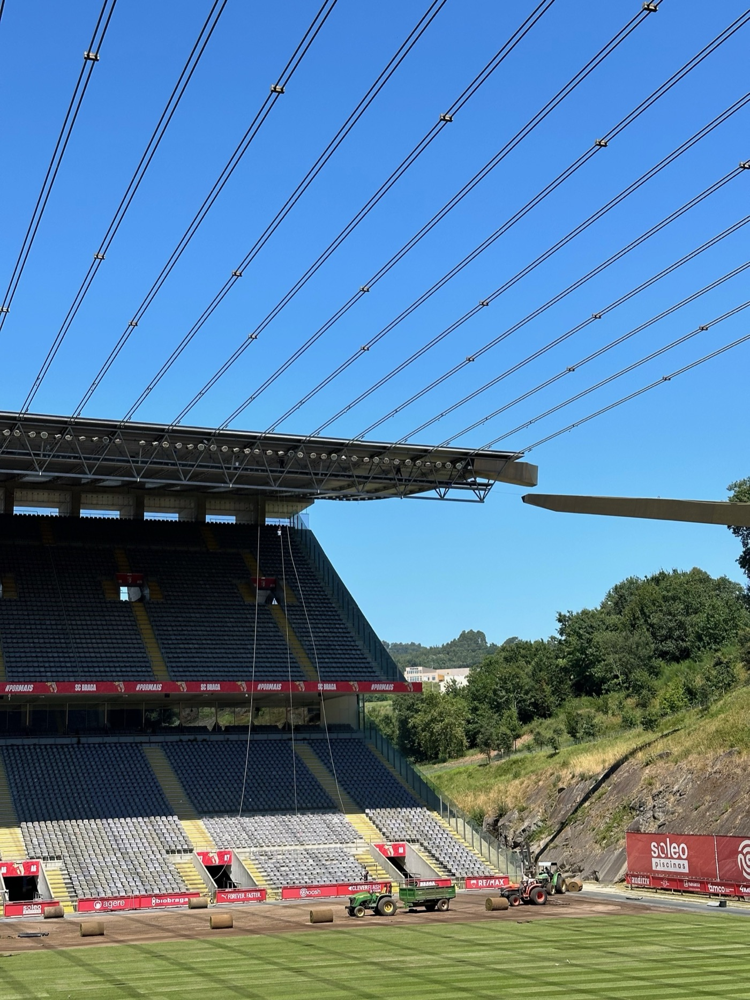

Brique / Iberian Wanderings 04
시민에게 사랑받는 축구 클럽과 채석장 위에 세워진 경기장

포르투 주변 도시를 거닐다 만난 브라가 시립 경기장은 축구 클럽의 홈구장을 넘어, 시민의 자산과 공공성, 그리고 채석장의 지형을 읽어낸 건축적 태도가 함께 겹쳐지는 도시의 상징으로 남는다.
포르투 주변에는 가볼 만한 도시가 많다
포르투갈 북부 거점 도시 포르투 주변에는 매력적인 소도시들이 많이 있다. 포르투에서 머무는 기간이 길어지면서 차츰 주변 도시에도 관심이 가기 시작했다. 대표적인 예로, 페냐성지와 공작성 등 오래된 건축물이 잘 보존된 기마랑이스 Guimaraes, 아기자기한 타일 장식이 돋보이는 건축물과 운하로 포르투갈의 작은 베네치아로 불리는 아베이루 Aveiro, 줄무늬 주택들이 줄지어 서 있는 마을 코스타 노바 Costa Nova, 상 곤사루 Sao Goncalo 축제가 매년 유월에 열리는 산속 도시 아마란치 Amarante, 그리고 더 멀리 있는 가톨릭 성지 파티마 Fatima까지. 여기서 모두 언급하지 못했지만, 도시마다 저마다의 매력과 개성을 가지고 있다.
이번에는 브라가 Braga에 관해 이야기하고자 한다. 포르투갈 대표적인 건축가 에두아르두 소우토 데 모우라 Eduardo Souto de Moura의 건축물이 눈에 들어왔기 때문이다. 바로 브라가 시립 경기장 Estadio Municipal de Braga이다.
브라가 시에서 운영하는 시립 축구경기장
이슈따지우 무니시파우 Estadio Municipal는 번역하면 시에서 설립하고 시의회를 통해 운영하는 시립 경기장이라는 뜻이다. 이번에 만날 곳은 여기에 de Braga, 브라가의, 를 붙여 브라가 시립 경기장이라는 의미가 된다. 시립 경기장은 주로 축구 경기장으로 기능하며, 육상 트랙과 다목적 시설물이 포함되어 때때로 다른 목적으로 사용되기도 한다. 시의회의 주도로 공공예산, EU 기금, 민간 투자 등으로 재원을 마련해 건설되며, 준공 후에는 시에서 직영하거나 지역 클럽이 장기 임대해 운영한다.
브라가는 지역 클럽 SC Braga에서 사용 및 운영하고 있다. 스타디움은 지역에서 축구 경기장 이상의 의미가 있다. 도시 정체성의 상징, 곧 랜드마크이자 시민들이 누구나 이용할 수 있는 공공장소이며, 지역 경제 활성화에도 이바지하는 건축물이다.

브라가 시립 경기장의 운영 주체인 SC Braga, 공식 명칭 Sporting Clube de Braga는 1921년 창단해 포르투갈 북구 지역을 대표하는 프로축구 클럽이다. 프리메이라 리가 Primeira Liga에서 활약하고 있으며, 포르투갈 컵과 리그컵, UEFA 인터토토 컵, 유로파리그 등에서 꾸준히 좋은 성적을 내왔다. 여성 축구단인 게헤이라스 두 미뉴 Guerreiras do Minho 역시 포르투갈 여자 축구 1부리그와 여러 컵대회에서 강한 존재감을 보여주고 있다.
브라가 시립 경기장은 시민 모두의 자산이다. 유지 관리 비용을 세금으로 충당하기 때문에 시민의 관심도 높다. SC Braga가 상징적인 임대료를 내는 것에 비해 시의 재정적 부담이 상당했고, 이에 따라 시의회는 2023년 10월 공식적으로 매각 계획을 발표했다. 2025년 현재 매수 조건을 논의 중이며, 향후 운영 유연성과 공공성을 어떤 방식으로 이어갈 것인지가 중요한 과제로 남아 있다.
미뉴 Minho는 포르투갈 북서부 지역을 일컫는 전통적인 이름이다. 오늘날의 행정구역으로는 브라가 Braga, 비아나 두 카스텔루 Viana do Castelo, 기마랑이스 Guimaraes 등을 포함한다. 북부 최대 라이벌인 SC Braga와 Vitoria SC의 경기를 미뉴 더비 Derby do Minho라고 부르는 것도 이 지역명에서 왔다.

여정 가운데 만난 우연들
브라가는 포르투에서 버스를 타고 약 1시간 10분 정도 걸린다. 거점을 옮기는 이동이기 때문에 모든 짐을 다 들고 움직였다. 브라가에서 숙박하지 않고 바로 이동할 계획이었기 때문에 짐을 보관할 장소가 필요했다. 그래서 온라인 짐 보관 서비스 플랫폼을 선택했다. 애플리케이션을 통해 해당 지역의 게스트하우스나 카페와 같은 제휴 공간에 짐을 맡기는 방식이다.
스타디움 가이드 투어는 오후 3시, 짐을 맡기고 나오니 오전 11시 30분이었다. 언제나처럼 발길 닿는 대로 거닐었다. 포르투에 익숙해져 있다가 오랜만에 느끼는 거리의 낯섦이 있었다. 우연히 만난 브라가 시립 시장과 광장들, 지하를 파서 입체적으로 만든 점포, 옛 도시 한가운데 살짝 가미된 현대적 요소들이 특히 인상적이었다.
바다와 강을 끼고 있는 포르투와 내륙의 브라가는 날씨도 달랐다. 오후 2시 기준 섭씨 33도에 육박하고 강렬한 햇살이 내리쬐었다. 탈수 증세를 느껴 걸어서 스타디움까지 가려던 계획을 바꾸고 볼트 Bolt를 호출했다.


경기장은 축구 경기 관람이지만, 공간 가이드 투어로
큰 부지가 하나의 주소로 되어 있는 것일까. 볼트 기사님이 다른 골목으로 들어가는 바람에 한참을 더듬어서 길을 거슬러 올라갔다. 브라가의 축구 클럽 SC Braga를 알리는 거대한 사이니지와 깃발이 없었다면 찾아갈 수 없었을 것이다. 대부분 사람이 차량으로 오는 곳이라 걸어오는 사람은 드물었고, 입구 역시 직원용 혹은 설비용 차량 진입로처럼 보였다.
트럭에 탄 사람들과 컨테이너 옆 경비원이 눈에 띄었다. 대화가 끝나길 기다렸다가 가이드 투어를 하러 왔다고 말하니, 경기장 사무실에 확인한 뒤 출입증을 써 주었다. 안쪽으로 더 걸어 들어가자 비로소 스탠드가 높게 솟은 모습이 나타났고, 그제야 제대로 찾아왔다는 안도감이 들었다.
터널을 지나 붉은 간판 빛을 따라 입구에 도달했고, 그곳에서 포르투갈 사람 두 명과 합류해 가이드와 함께 투어를 시작했다. 포르투갈어와 영어가 섞인 설명은 장소의 분위기와 잘 어울렸다.


채석장 위에 세워진 건축, 채석장 Pedreira
옛 석회암 채석장이라는 독특한 부지에 가능한 기존 자연의 형상에 손을 대지 않고, 건축물을 그 위에 띄워 만들었다. 엘리베이터를 타고 올라 가장 먼저 마주한 장면이 바로 이 경기장의 정체성을 요약하는 장면이었다. 사람들은 이 경기장에 페드레이라 Pedreira, 곧 채석장이라는 별명을 붙였다.
그 이유는 두 가지다. 첫째, 몽치 까스트루 Monte Castro 북쪽에 있었던 채석장 위에 지어져 경기장 전체가 마치 채석장의 연장선처럼 보인다는 점. 둘째, 자연 지형을 최대한 보존하려는 건축가의 철학 아래 관중석 한쪽은 암석 위에, 다른 한쪽은 콘크리트 리브 구조로 세워져 원래의 지형과 조화를 이루면서도 강한 대비를 만든다는 점이다.


스탠드로 나가자 잔디 정비가 한창이었다. 가장 높은 스탠드에서 바라본 그라운드는 급한 경사도 덕분인지 극적인 장면을 드러냈다. 어느 자리에 앉더라도 시야가 가려지는 것 없이 한눈에 보일 것 같은 구조였다.
브라가 스타디움의 또 다른 독특한 점은 양 골대 뒤로 관중석이 없다는 점이다. 양 지붕을 지탱하는 34쌍의 와이어와 함께 양옆이 완전히 열려 있어, 표를 구하지 못한 사람도 옆 언덕에 오르면 경기를 볼 수 있다. 이 개방된 시선은 기존 자연환경을 최소한으로 건드리려는 설계 의도와 지역 사회적 접근성을 동시에 드러낸다.


outro. 뜨거운 공기가 식어가는 동안 떠나온 길
노출콘크리트의 날것 같은 매력과 스탠드를 오르내리는 계단, 구조의 조형성은 채석장 언덕에 본래 있었던 것처럼 느껴졌다. 그라운드 앞으로 나아가면 이곳에 세워진 인공물이 거의 없다는 착각이 들 정도였다. 무엇을 짓는 행위의 이상적인 모습 중 하나가 아닐까.
가이드는 며칠 뒤 있을 다음 경기를 위해 경기장 재정비가 필요하다며 짧은 인사를 건넸다. 공간을 온전히 누리기에는 너무 짧았던 1시간의 가이드 투어가 끝나고, 터널을 지나 다시 뜨거운 세상으로 나왔을 때도 발걸음은 쉽게 떨어지지 않았다. 볼트를 타고 빠르게 이동하기보다 여운을 즐기고 싶어서, 시내로 돌아가는 길은 걷기로 했다.


잠깐 경험한 브라가는 과거와 현재가 예고 없이 서로 충돌하고 교차한다. 돌로 지은 건축과 콘크리트 건축이 한 거리에 있는 것은 물론이고, 갑자기 성벽을 배경으로 오래된 정원이 펼쳐지기도 한다. 하지만 신기하게도 이상하거나 어색하지 않았다. 이미 함께 쌓은 시간의 누적 때문일까. 쉽사리 답을 내리지 못한 채 다음 도시로 향하는 버스에 몸을 실었다.